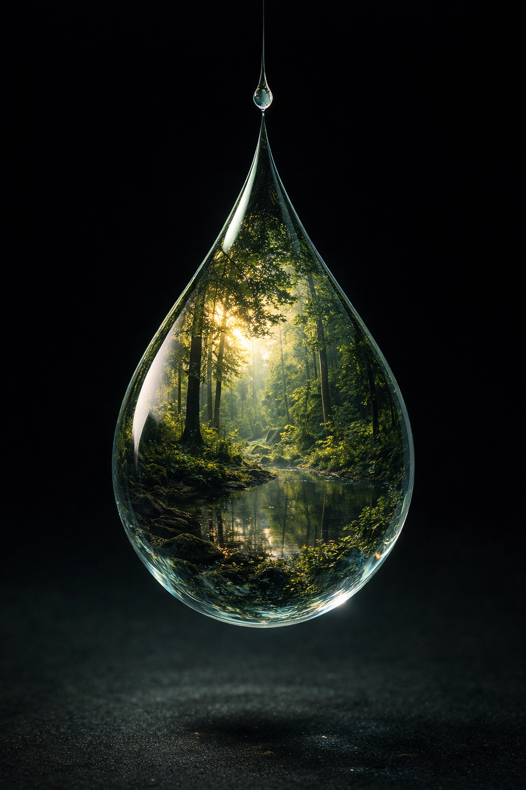
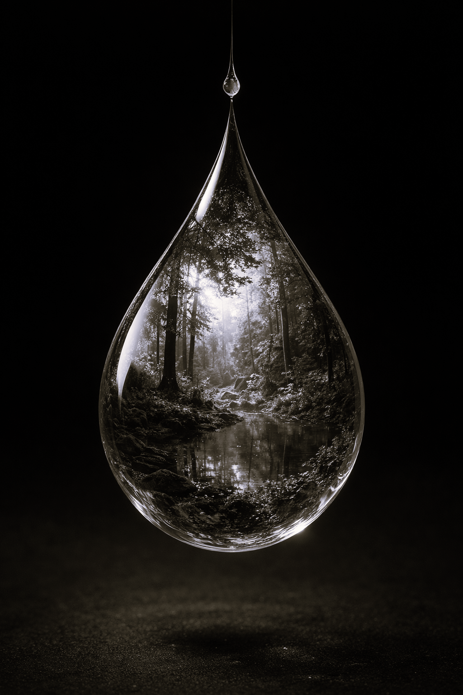
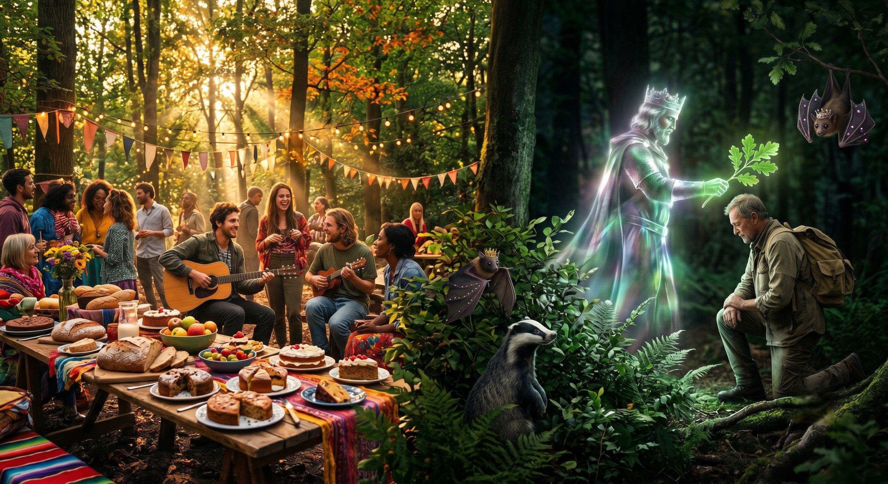
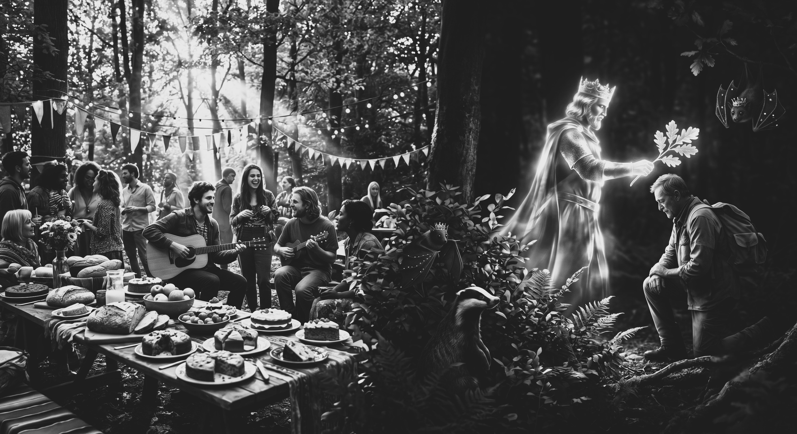

Tritt ein in eine Welt, die älter ist als die Zeit der Menschen. Entdecke das verborgene Wunderreich unter dem Moos, lausche den Ratschlägen der Tiere und spüre den sanften Zauber des Waldes.
Jetzt überall im Buchhandel und als edle Druckausgabe erhältlich.
Jetzt auf Amazon bestellen Über das Buch



§ 1 Gesetz der Geisterzwischenwelt: Der Betrachter dieser Seite und Leser des Buches wird hiermit feierlich dazu aufgerufen, den Wald mit absolutem Respekt zu behandeln. Wer Müll hinterlässt oder die Stille bricht, verfällt dem zornigen Läuten der Maiglöckchen.
§ 2 Warnung des Weißen Hirsches: Hüte dich vor dem Pfad abseits der leuchtenden Wurzeln! Der Weiße Hirsch bewacht das Herz des Forsts und sieht jede menschliche Gier. Wandle mit reinem Herzen, oder die Fledermäuse rauben dir den Schlaf.
Disclaimer: Alle magischen Wesen, sprechenden Eichen und Fledermausköniginnen in diesem Werk existieren wirklich – man muss nur still genug werden, um sie zu hören. Für unvollständig ausgelesene Textdaten im Menschen-Internet haftet der Waldgeist nicht.
Verantwortlich für den Inhalt:
[Dein Vorname] [Dein Nachname]
E-Mail: deine-email@beispiel.de